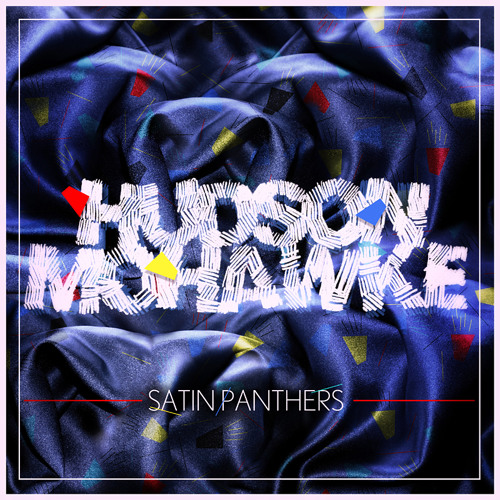

Hudson Mohawke
Hudson Mohawke (Ross Birchard) has been on a meteoric rise the last few years, working with some of the biggest names in hip hop, pop and dance music but everything started in a bedroom in Glasgow when he was barely a teenager. From age 15 he was an award winning scratch DJ producing happy hardcore on cracked software - he came to define a generation of electronic fusion producers but unlike many of his peers, Hudson has matured into a fully fledged contemporary hitmaker continually working to break the mold.
Born of the underground club scene in the UK, ‘Hud Mo’ has been releasing music for the last 10 years, cultivating a formidable presence in the community. His US break-out came in 2012 with TNGHT, the collaborative project with fellow producer Lunice, which saw their production influence the A-list in rap and help reintroduce the US dance / EDM scene to Hip Hop as club music. In the two years following, Hudson has worked on releases from Drake, Kanye West, John Legend, Young Thug, Pusha-T, and Antony Hegarty.